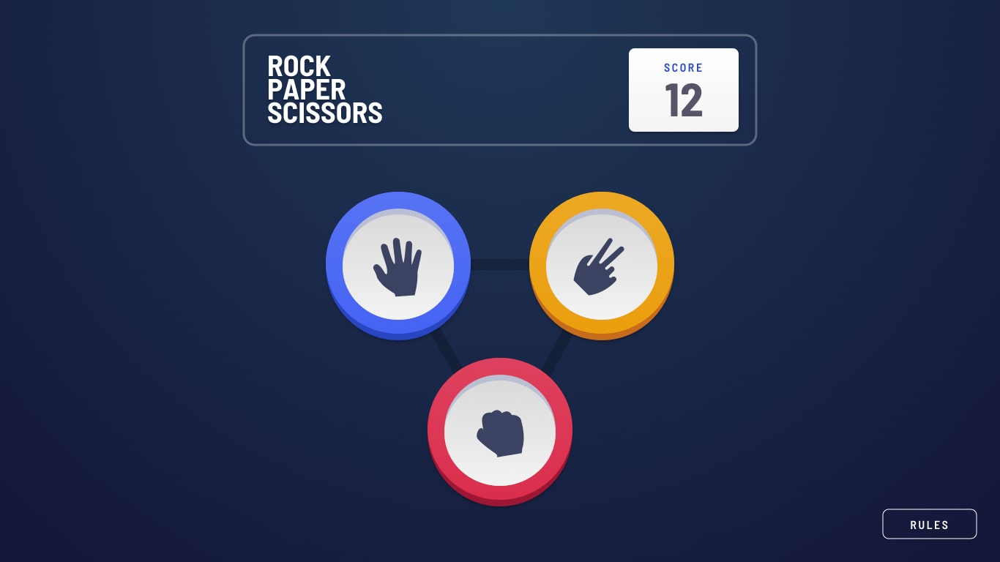
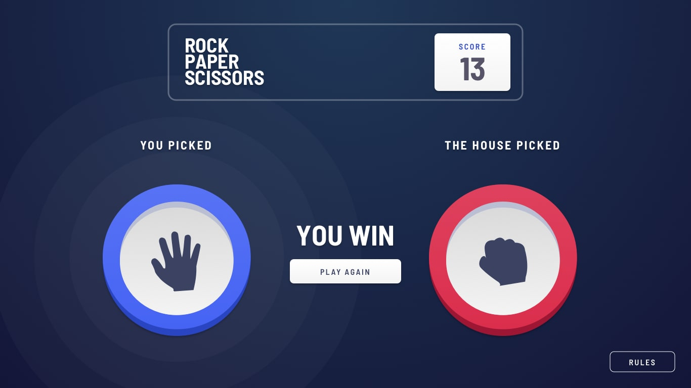
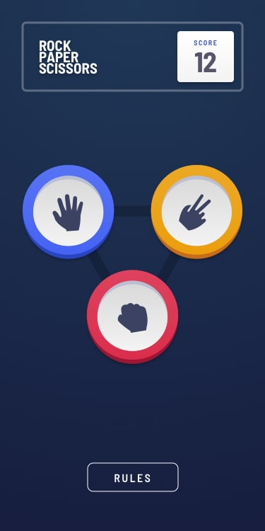
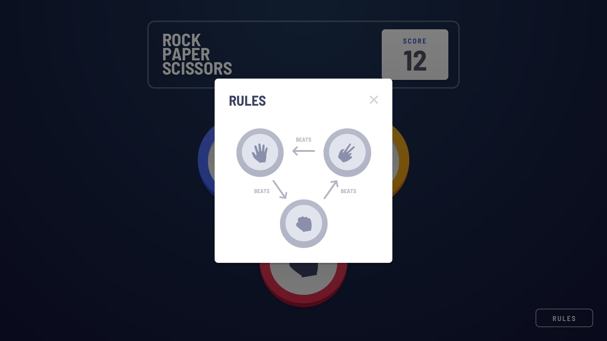

Un jeu classique réinterprété en JavaScript vanilla — conçu de A à Z pour maîtriser la logique de jeu, la manipulation du DOM et la persistance des données côté client.

Développé en dehors des cours, ce projet est né d'une envie simple : aller au-delà des exercices académiques et construire quelque chose de bout en bout, seul. Le défi ? Recréer Pierre-Feuille-Ciseaux en JavaScript pur, sans framework ni librairie externe.
L'idée est de démontrer une maîtrise réelle du DOM, de la logique conditionnelle et de la gestion d'état — des fondamentaux que j'ai mis en pratique de façon concrète plutôt que théorique.
Le jeu se joue en 3 manches avec victoire anticipée possible, et conserve un score global persistant entre les sessions via localStorage.
addEventListener à l'intérieur d'une fonction
causait leur multiplication à chaque appel, créant des comportements inattendus.
event.target et
event.currentTarget — notamment quand l'image enfant
intercepte le clic à la place du div parent.
event.currentTarget.id pour cibler l'élément écouté.
rejouer() dédiée qui remet tout à l'état initial.


